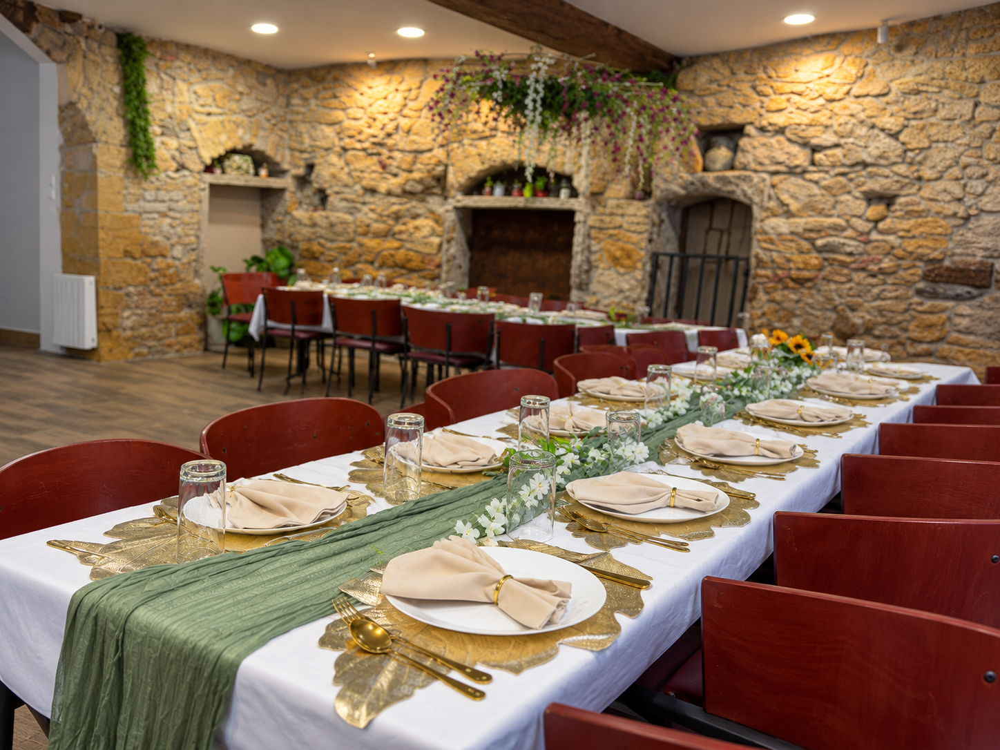
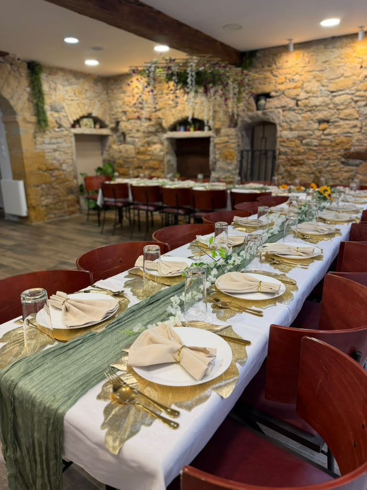
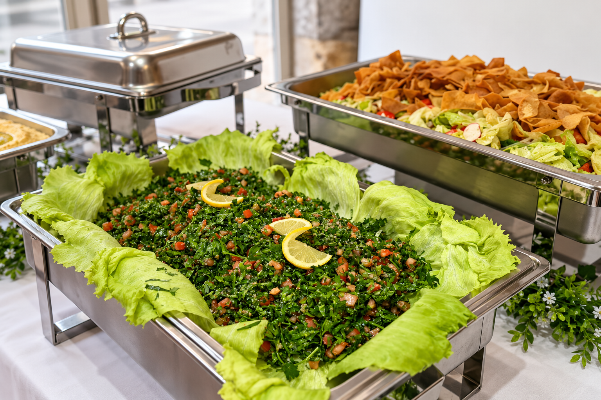
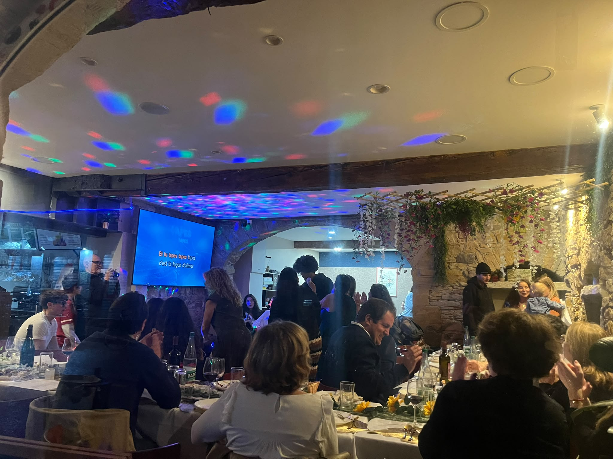
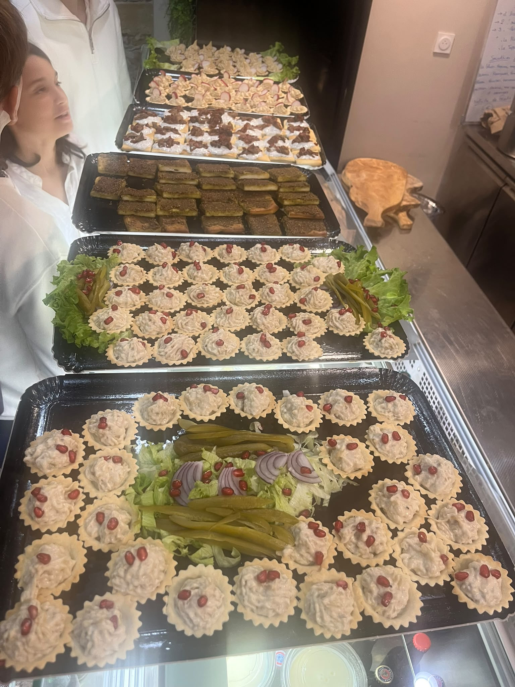

RÉCEPTIONS
Un lieu qui vous ressemble
Un espace convivial et modulable pour vos moments en petit comité comme vos grandes retrouvailles.

Salle privatisable · Lyon 1er · 19 rue Terme
Fêtes, anniversaires, mariages, séminaires, formations, team building, yoga ou méditation : Arcs Café se privatise en plein centre de Lyon et s’adapte à votre projet.
L’ESPRIT ARCS CAFÉ
Un lieu chaleureux à taille humaine, au cœur de Lyon, pour se réunir, travailler, se ressourcer, célébrer et savourer.
Vous choisissez l’occasion et l’ambiance ; nous adaptons l’espace, la cuisine, le bar et l’animation à votre projet. Ici, chaque événement est pensé avec vous.
Au 19 rue Terme, au pied des pentes de la Croix-Rousse et à deux pas de la place des Terreaux, notre salle privatisable se loue pour vos événements privés comme professionnels : anniversaire, mariage, repas de famille, réunion, séminaire, formation ou cours de yoga.
NOS ACTIVITÉS
Que vous organisiez une journée de travail, une séance de bien-être ou une fête de famille, la salle se transforme selon vos besoins.
Location de salle pour entreprises à Lyon : un cadre convivial, loin des salles de réunion classiques.
Activités collectives, jeux et temps de cohésion pour souder vos équipes.
Une salle de réunion calme et équipée pour échanger, décider et avancer ensemble.
Salle de séminaire à la journée ou à la demi-journée, avec pauses café et déjeuner sur place.
Salle de formation modulable pour accueillir vos sessions en petit groupe.
Présentations, interventions et rencontres professionnelles devant un public, jusqu’à 50 personnes assises.
Rendez-vous individuels ou collectifs dans un lieu accueillant.
Une salle à louer à l’heure ou à la journée pour vos ateliers créatifs, pédagogiques ou thématiques.
Cocktail, buffet ou dîner pour fêter un succès, organiser le repas de fin d’année ou accueillir vos clients.
Professeurs et praticiens, louez une salle calme à Lyon 1er pour vos séances : ici, on ralentit, on respire, on prend soin de soi.
Cours de yoga collectifs ou privés, pour tous les niveaux.
Mouvements lents et respiration pour retrouver énergie et équilibre.
Séances de méditation guidée pour apaiser l’esprit et se recentrer.
Relaxation et gestion du stress, en séance individuelle ou de groupe.
Séances de détente et de bien-être, sur rendez-vous.
Une salle de fête à Lyon pour les grandes occasions comme les simples retrouvailles.
Salle de réception pour votre cérémonie, votre vin d’honneur ou votre repas de mariage en petit comité.
Baptême, communion ou dimanche en famille : une grande table pour réunir toutes les générations.
Une salle d’anniversaire avec buffet, bar, musique et espace danse, pour toutes les tranches d’âge.
Une ambiance douce et gourmande pour accueillir bébé.
Privatisez la salle : karaoké, DJ ou playlist, la soirée est à vous.
LA FORMULE QUI VOUS VA
Un seul lieu, plusieurs façons de se retrouver : réception, dîner, cocktail ou grande soirée.

RÉCEPTIONS
Un espace convivial et modulable pour vos moments en petit comité comme vos grandes retrouvailles.

COCKTAILS & BUFFETS
Buffet, cocktail dînatoire, brunch ou repas : composez une formule qui vous ressemble.

SOIRÉES
Bar, musique, karaoké et espace de danse : tout est prêt pour une soirée mémorable.
LA GALERIE


Donnez-nous la date, le nombre de participants et le type d’activité.
Venez découvrir le lieu sur rendez-vous, au 19 rue Terme, et choisissez votre formule.
Buffet, bar, matériel, musique : nous préparons le reste avec vous.
QUESTIONS FRÉQUENTES
La salle accueille jusqu’à 50 personnes assises et 70 debout, avec un espace pour danser. Elle convient aussi bien à une réunion en petit comité qu’à une grande soirée d’anniversaire.
Au 19 rue Terme, 69001 Lyon, dans le 1er arrondissement, au pied des pentes de la Croix-Rousse, près de la place Sathonay et de la place des Terreaux. Le métro Hôtel de Ville – Louis Pradel (lignes A et C) est à quelques minutes à pied.
Oui, selon votre activité : à l’heure pour un atelier, un cours de yoga ou une consultation, à la demi-journée ou à la journée pour un séminaire ou une formation, en soirée pour une fête ou un afterwork. Professeurs, praticiens et formateurs sont les bienvenus.
Oui. Du café d’accueil au repas complet, nous préparons buffets, cocktails dînatoires, brunchs et repas, avec un bar adapté à votre événement. Musique, karaoké et espace danse sont aussi disponibles pour vos soirées.
Le tarif dépend de la date, de la durée, du nombre de personnes et des prestations choisies (buffet, bar, animation). Appelez-nous au 06 99 54 99 53 pour un devis adapté à votre projet.
Oui, les visites se font sur rendez-vous. Appelez-nous pour choisir un créneau et découvrir le lieu avant de réserver.
UNE DATE EN TÊTE ?
VOTRE ÉVÉNEMENT, SUR MESURE
POUR TOUTES LES OCCASIONS
ARCS CAFÉ · LYON 1ER
Vous cherchez une salle à louer à Lyon ? Pour connaître les disponibilités et les tarifs, visiter la salle ou imaginer votre formule, appelez-nous directement.
06 99 54 99 53↗